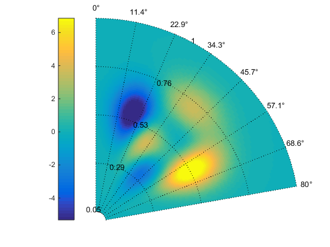
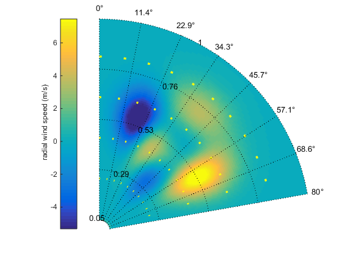
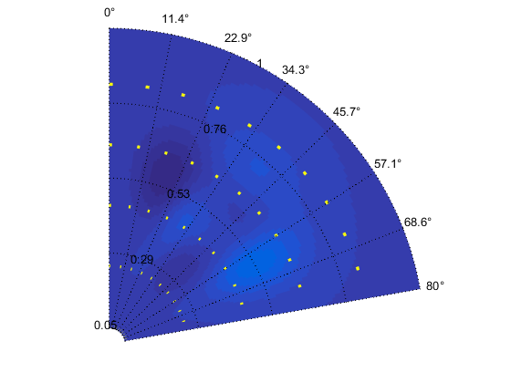
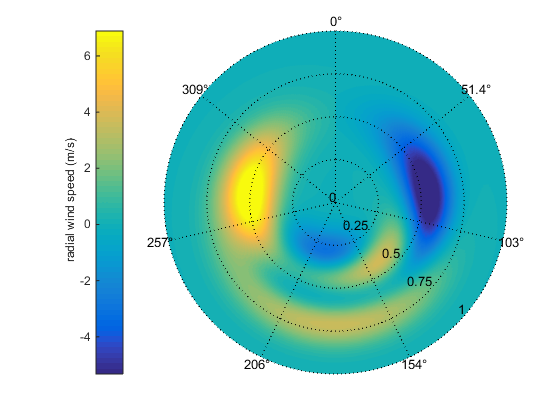
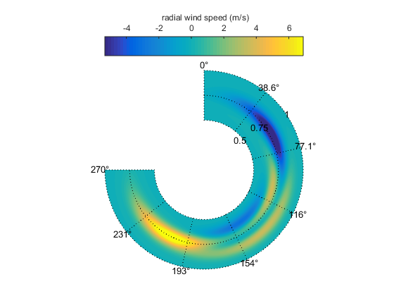

Contents
Examples
The following examples illustrate the application of the function polarPcolor
clearvars;close all;clc;
Minimalist example
Assuming that a remote sensor is measuring the wind field for a radial distance ranging from 50 to 1000 m. The scanning azimuth is oriented from North (0 deg) to North-North-East ( 80 deg):
R = linspace(50,1000,100)./1000; % (distance in km) Az = linspace(0,80,100); % in degrees [~,~,windSpeed] = peaks(100); % radial wind speed figure [h,c]=polarPcolor(R,Az,windSpeed)
h =
Surface with properties:
EdgeColor: 'none'
LineStyle: '-'
FaceColor: 'flat'
FaceLighting: 'flat'
FaceAlpha: 1
XData: [100x100 double]
YData: [100x100 double]
ZData: [100x100 double]
CData: [100x100 double]
Use GET to show all properties
c =
ColorBar with properties:
Location: 'westoutside'
Limits: [-5.3237 6.8662]
FontSize: 9
Position: [0.1772 0.1095 0.0476 0.8167]
Units: 'normalized'
Use GET to show all properties
 Example with options
We want to have 4 circles and 7 spokes, and to give a label to the radial coordinate
figure [~,c]=polarPcolor(R,Az,windSpeed,'labelR','r (km)','Ncircles',4,'Nspokes',7); ylabel(c,' radial wind speed (m/s)'); set(gcf,'color','w')
Dealing with outliers
We introduce outliers in the wind velocity data. These outliers are represented as wind speed sample with a value of 100 m/s. These corresponds to unrealistic data that need to be ignored. To avoid bad scaling of the colorbar, the function polarPcolor uses the function caxis combined to the function quantile to keep the colorbar properly scaled: caxis([quantile(Z(:),0.01),quantile(Z(:),0.99)])
windSpeed(1:10:end,1:20:end)=100; figure [~,c]=polarPcolor(R,Az,windSpeed); ylabel(c,' radial wind speed (m/s)'); set(gcf,'color','w')
polarPcolor without colorbar
The colorbar is activated by default. It is possible to remove it by using the option 'colBar'. When the colorbar is desactivated, the outliers are not "removed" and bad scaling is clearly visible:
figure
polarPcolor(R,Az,windSpeed,'colBar',0) ;
 Different geometry 1
N = 360; R = linspace(0,1000,N)./1000; % (distance in km) Az = linspace(0,360,N); % in degrees [~,~,windSpeed] = peaks(N); % radial wind speed figure [~,c]= polarPcolor(R,Az,windSpeed); ylabel(c,' radial wind speed (m/s)'); set(gcf,'color','w')
Different geometry 2
N = 360; R = linspace(500,1000,N)./1000; % (distance in km) Az = linspace(0,270,N); % in degrees [~,~,windSpeed] = peaks(N); % radial wind speed figure [~,c]= polarPcolor(R,Az,windSpeed,'Ncircles',3); location = 'NorthOutside'; ylabel(c,' radial wind speed (m/s)'); set(c,'location',location); set(gcf,'color','w')